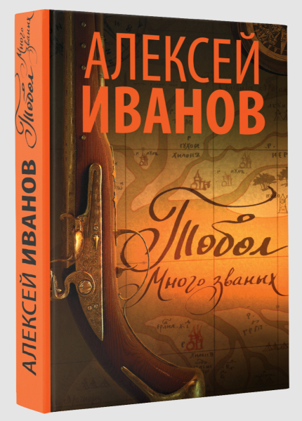

<!DOCTYPE html(prefix="og: http://ogp.me/ns#")>
<html>
  <head>
    <meta charset="utf-8"/>
    <meta name="viewport" content="width=device-width, initial-scale=1.0"/>
    <meta property="og:url" content="http://chernotrop.reviews/tobol"/>
    <meta property="og:type" content="text/html"/>
    <meta property="og:title" content="Добротный, но жестокий «Тобол» ⚒ Чернотроп"/>
    <meta property="og:description" content="Артём Сошников разбирается, почему дилогию Иванова так тяжело дочитать"/>
    <meta property="og:image" content="http://chernotrop.reviews/img/ivanov-tobol-og.jpg"/>
    <link href="https://fonts.googleapis.com/icon?family=Material+Icons" rel="stylesheet"/>
    <link rel="stylesheet"/><!-- Yandex.Metrika counter --> <script type="text/javascript" > (function(m,e,t,r,i,k,a){m[i]=m[i]||function(){(m[i].a=m[i].a||[]).push(arguments)}; m[i].l=1*new Date();k=e.createElement(t),a=e.getElementsByTagName(t)[0],k.async=1,k.src=r,a.parentNode.insertBefore(k,a)}) (window, document, "script", "https://mc.yandex.ru/metrika/tag.js", "ym"); ym(56951962, "init", { clickmap:true, trackLinks:true, accurateTrackBounce:true, webvisor:true, trackHash:true }); </script> <noscript><div></div></noscript> <!-- /Yandex.Metrika counter -->
    <title>Добротный, но жестокий «Тобол» ⚒ Чернотроп</title>
  <link href="./css/style.bundle.css" rel="stylesheet"></head>
</html>
<body class="body_light">
  <header class="header header_dark">
    <div class="header__logo">
      <div class="logo logo_dark"><a class="logo__link" href="/">ЧЕРНОТРОП</a></div>
    </div>
    <div class="header__menu" id="modeValue"><a href="menu.html">
        <svg xmlns="http://www.w3.org/2000/svg" width="24px" height="24px" viewBox="0 0 24 24">
          <path d="M0 0h24v24H0z" fill="none"></path>
          <path class="icon_white" d="M3 18h18v-2H3v2zm0-5h18v-2H3v2zm0-7v2h18V6H3z"></path>
        </svg></a>
    </div>
  </header>
  <article class="article">
    <div class="article__header">
      <h1 class="article__headline">Добротный, но жестокий «Тобол»</h1>
      <p class="article__description">Несмотря на хорошо проделанную работу, дилогию Алексея Иванова дочитывают далеко не все. Артём Сошников пытается понять, почему.</p>
    </div>
    <div class="article__content">
      <div class="article__content-row">
        <div class="article__content-left">
          <p>Алексей Иванов — писатель добротный, но жестокий, что видно по его роману «Тобол».</p>
          <p>За проделанную писательскую работу Иванову уважение: сибирский быт восстановлен досконально, постоянно натыкаешься на незнакомую лексику. Гугл обречён не закрываться.</p>
          <p class="article__content-secondary-info">Подними меня ночью, крикни «Новые слова из Тобола, ну!!!» — и я тут же отзовусь: дощаник, киот, домовина, джунгары, улама, Торжинкит, остяки, нойон, ретраншемент, батог…</p>
          <p>Наверное, историки смогут уличить Иванова в отступлениях и вольностях, но издатель на пару с автором перестраховались и вынесли в аннотацию термин «пеплум», больше известный нам по кинематографу (заодно ещё раз подчеркнули две ивановские профессии, писателя и сценариста). Пеплумы — исторические фильмы с акцентом на батальных сценах и длинным хронометражом, но нам интересно не это. Для нас важнее тот факт, что уровень достоверности в пеплуме плавающий. Жанр равнодушен к вольностям, а в ранний свой период даже им потакал.</p>
        </div>
        <div class="article__content-right">
          <figure>
            <figcaption>Обложка романа, 2019.</figcaption>
          </figure>
        </div>
      </div>
      <div class="article__content-row"></div>
      <div class="article__content-left">
        <p>Что ж, если не переживать за достоверность, роман читается увлекательно. Иванов изобразил мир русской Сибири восемнадцатого века и ввёл в него большое количество колоритных героев, которых паутиной связывают политические, нравственные и любовные конфликты. Очень хочется сравнить «Тобол» с творчеством Леонида Юзефовича, но сравнения эти сразу же рассыпаются, как труха: в той же «Зимней дороге» Юзефович погружается в мир собственных героев, а Иванов смотрит отстранённо, отводит себе роль Джорджа Мартина. Юзефович сидит рядом с героями в окопе и черкает карандашом на обрывке бумаги; Иванов следит за событиями в глазок коробки, собранной им же самим ради исследовательского интереса.</p>
        <figure>
          <figcaption>По «Тоболу» уже снимают сериал. Похоже, он выйдет эпичным. Алексей Иванов открестился от сценария, его имени в титрах не будет.</figcaption>
        </figure>
        <p>Отстранённость автора — важный признак жестокости текста. Причём, жестокость у Иванова не физиологическая, а экзистенциальная. Кишки в романе выпускают, но умеренно, Иванов не пытается поразить нас булькающей кровищей или раздавленными мозгами. Шокирует скорее бессилие человека перед лицом иерархии, необратимость судьбы в закастованном, закерпощённом обществе.</p>
        <p>Да, это честный подход. Иванов не идеализирует эпоху и открыто показывает нам насилие, несправедливость, дикарские пороки восемнадцатого века. Наверное, мы должны ценить автора за искренность перед нами — но, увы, она конфликтует с назначением прозы как таковой.</p>
        <p>Хорошая проза защищает нас от ужаса действительности. И делает она это двумя путями: либо через позицию «Твои проблемы — мелочь», либо через единение по принципу «Ты не один, мы тоже пережили подобное». «Тобол» Иванова по таким тропинкам не ходит. Да, он умаляет проблемы белых людей бедами, в которые попадают герои романа. Так ли страшен ноющий зуб, если в книге пленную остячку ежедневно насилуют русские солдаты? Но тогда в истории обязан появиться герой, преодолевающий несправедливость, герой, бросающий вызов аду. У Иванова таких героев для нас не нашлось. Хороший герой противоречив, а в «Тоболе» все характеры преисполнены негатива, все принимают условия игры и считают их справделивыми. В итоге читатель, пытаясь укрыться от проблем XXI-го века, попадает в ещё более жестокую реальность. Порой кажется, что Иванов и сам убеждён в органичности описанного им мира; он не любит своих героев — соответственно, мы тоже не чувствуем эмпатии и бросаем книгу на середине.</p>
        <p class="article__content-main-thought">Удивительное дело: при всей своей глубине, проработанности фактуры и сюжета роман отталкивает читателя равнодушием. </p>
        <p>Голые детали быта интересны в рамках нон-фикшна, проза требует от произведения не только знания предмета (читайте — «мяса»), но и морали (читайте — «души»). «Тобол» в этом отношении роман бездушный, в нём не просматривается писательское отношение к истории и современности.</p>
        <p>Иванов — автор признанный, может позволить себе экспериментировать. Плохо лишь, что его эксперименты отталкивают читателя от текста.</p>
        <div class="article__content-author">⚒︎<br/><a href="http://soshnikov-writing.art/" target="blank"><span>Артём Сошников</span></a></div>
      </div>
    </div>
  </article>
<script type="text/javascript" src="./js/bundle.js"></script></body>